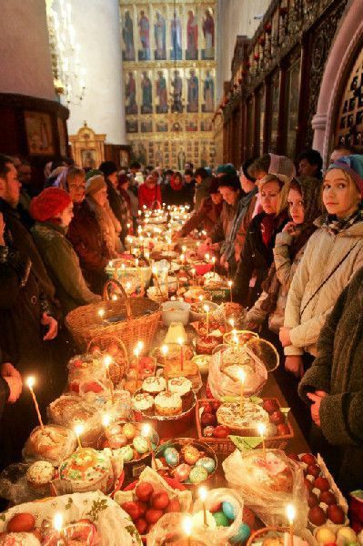

Feast Days & Fasting
Liturgical year, major feasts, and fasting rhythms.
The liturgical year is a school of holiness that orders time around the life of Jesus Christ. Each season and feast reveals an aspect of the Gospel and invites the faithful to live it more deeply. Hymns, readings, and icons catechize the heart while celebrations strengthen community and family life. By keeping this rhythm, believers learn to measure their days by grace rather than by distraction.
Among the great feasts, Pascha stands at the center as the celebration of Christ’s Resurrection. Surrounding it are the feasts of His Nativity and Theophany, the Transfiguration, and the descent of the Holy Spirit at Pentecost. The calendar also honors the Theotokos and the saints who manifested the power of the Gospel in their times. Fasting seasons prepare for these joys and teach compassion through self‑restraint and almsgiving.
The Liturgical Year
From September to August the Church walks through salvation history in a cyclical pattern. Movable feasts depend on the date of Pascha, while fixed feasts recur each year on the same day. This structure keeps the memory of Christ ever before the faithful and connects parish life to the worldwide Church. Even ordinary weekdays are marked by commemorations that encourage prayer and perseverance.
Fasting and Feasting
Fasting is not a diet but a spiritual discipline that trains desire and opens the heart to God. By limiting food and entertainment, Christians learn to give thanks for simple gifts and to share with those in need. Feasting then crowns the season with gratitude and joy, revealing that God’s commandments are life‑giving rather than restrictive. Together, fasting and feasting shape a balanced Christian life that is watchful, generous, and hopeful.
Keeping the Feasts at Home
Families can celebrate the Church year by setting up an icon of the feast and reading the appointed Scripture before meals. Simple customs—lighting candles, singing a troparion, or baking a festal bread—help children remember the meaning of the day. Hospitality to neighbors and friends extends the joy of the feast beyond the home and strengthens parish bonds. Over time these habits make the household a small church where love and prayer anchor daily routines.